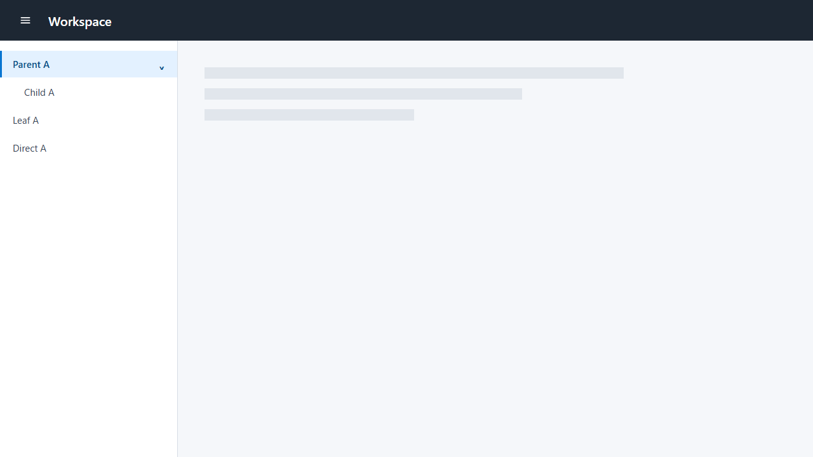
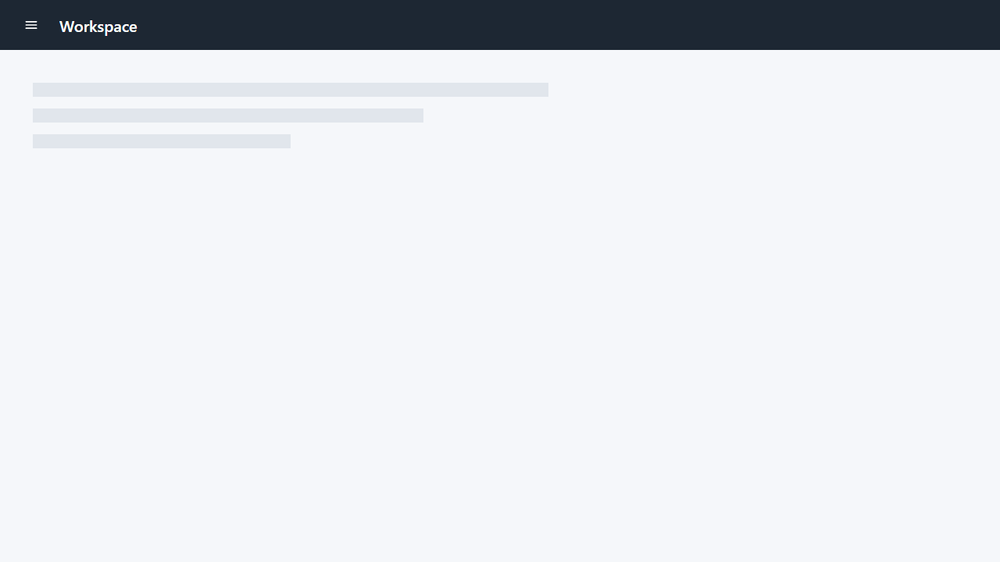

Pattern A visual review
Review the rendered comparison only. The question is whether this Header-and-Drawer transition looks coherent for a business application. Do not assess manifests, hashes, configuration, keyboard behavior, focus, Escape, accessibility semantics, persistence, responsiveness, routes, or implementation mechanics here.


Your three visual decisions
1. Header controller — In both states, does the menu controller visually belong to the Header rather than the Drawer body?
2. Title anchor — In both states, does the Workspace title remain in the Header?
3. Hidden Drawer — In the hidden state, is the Drawer absent without leaving an empty Drawer boundary or unused Drawer width?
The controls above are a local visual aid; they do not submit or persist an answer. Send the three decisions and any brief visual reason in this task.